Libri della Scienza Ammonia
Una raccolta di volumi, pratiche e insegnamenti firmati Riccardo Villanova MRA, riuniti in un corpus accessibile per accompagnare lo studio della Scienza Ammonia.
“Con il termine i Libri della Scienza Ammonia, si pensa di riunire in un unico corpus facilmente raggiungibile molti degli insegnamenti che fanno parte di quella collezione di idee, pratiche conoscenze e sapienza che nei millenni hanno coagulato quella che ora do al mondo come Scienza Ammonia.”
Le opere del Maestro MRA
{kind=link}
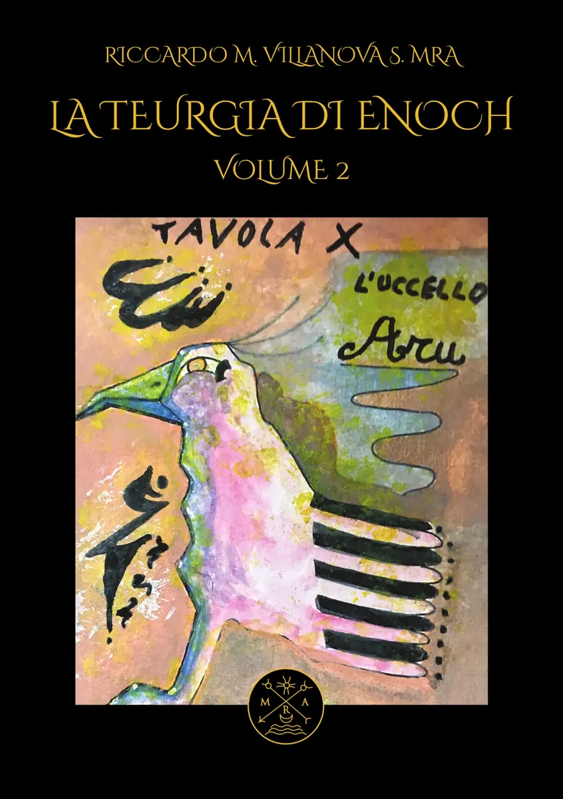
Nuovo libroLA TEURGIA DI ENOCH - VOL. II: PRATICA ZODIACALE - I DODICI
Il volume “LA TEURGIA DI ENOCH - VOL. II: PRATICA ZODIACALE - I DODICI” entra ora nella selezione dei libri con la sua copertina ufficiale.
{kind=link}
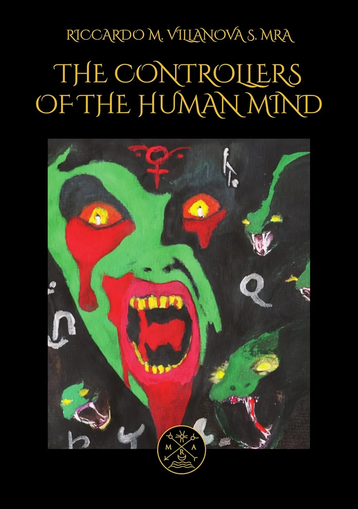
Nuovo libroTHE CONTROLLERS OF THE HUMAN MIND
Il volume “THE CONTROLLERS OF THE HUMAN MIND” entra ora nella selezione dei libri con la sua copertina ufficiale.
{kind=link}
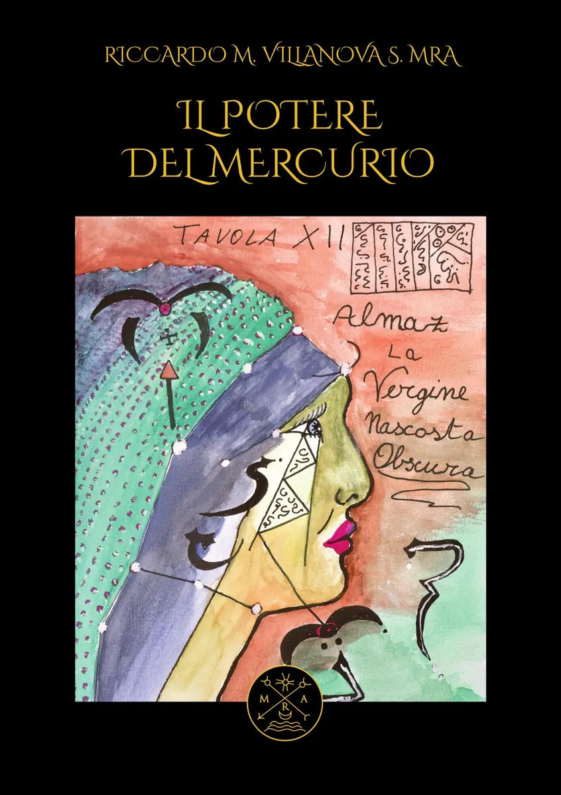
Nuovo libroTHE POWER OF MERCURY - THE SPIRITUAL BODY
Il volume “THE POWER OF MERCURY - THE SPIRITUAL BODY” entra ora nella selezione dei libri con la sua copertina ufficiale.
{kind=link}
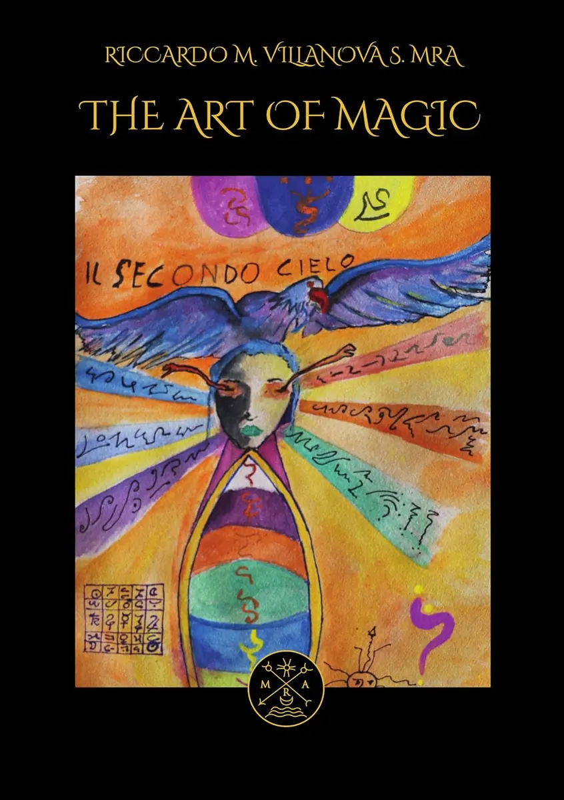
Nuovo libroTHE ART OF MAGIC
Il volume “THE ART OF MAGIC” entra ora nella selezione dei libri con la sua copertina ufficiale.
{kind=link}
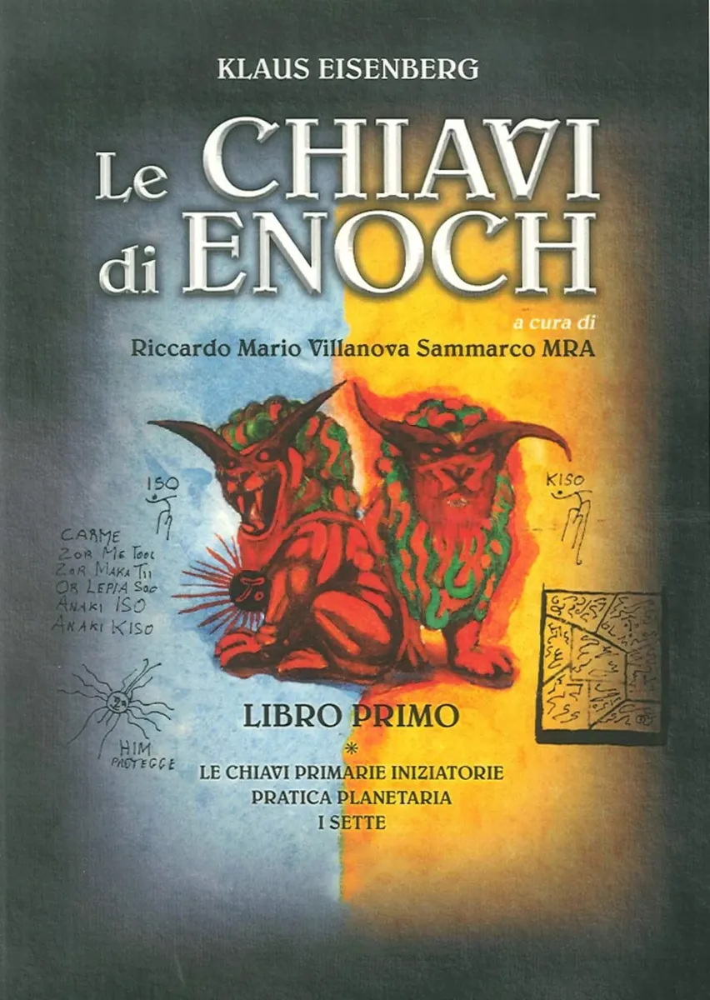
Nuovo libroLE CHIAVI DI ENOCH
Il volume “LE CHIAVI DI ENOCH” entra ora nella selezione dei libri con la sua copertina ufficiale.
{kind=link}
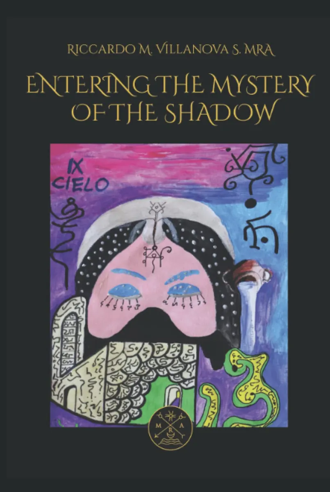
Nuovo libroENTERING THE MYSTERY OF THE SHADOW - ASSYRIAN-BABYLONIAN MAGIC
Il volume “ENTERING THE MYSTERY OF THE SHADOW - ASSYRIAN-BABYLONIAN MAGIC” entra ora nella selezione dei libri con la sua copertina ufficiale.
{kind=link}
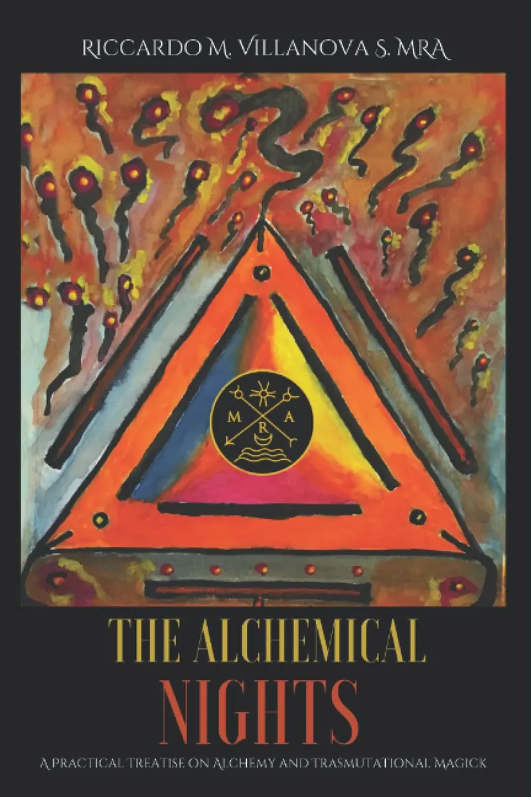
Nuovo libroTHE ALCHEMICAL NIGHTS - A PRACTICAL TREATISE ON ALCHEMY AND TRANSMUTATIONAL MAGIC
Il volume “THE ALCHEMICAL NIGHTS - A PRACTICAL TREATISE ON ALCHEMY AND TRANSMUTATIONAL MAGIC” entra ora nella selezione dei libri con la sua copertina ufficiale.
{kind=link}
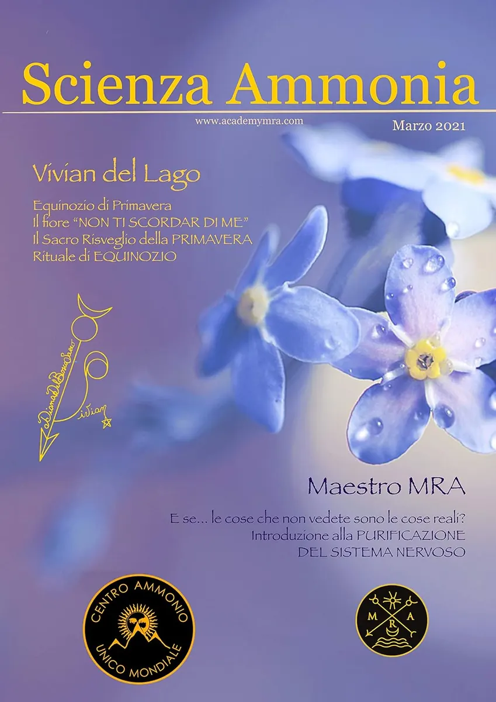
Nuovo libroSCIENZA AMMONIA - EQUINOZIO DI PRIMAVERA
Il volume “SCIENZA AMMONIA - EQUINOZIO DI PRIMAVERA” entra ora nella selezione dei libri con la sua copertina ufficiale.
{kind=link}
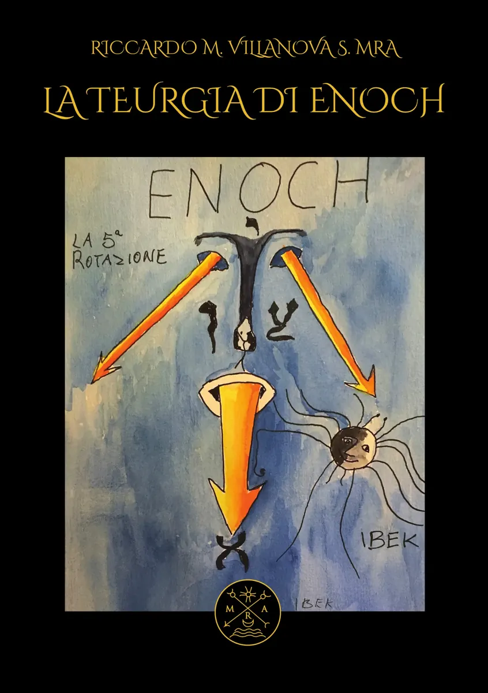
Nuovo libroTHE THEURGY OF ENOCH - VOL I: PLANETARY PRACTICE - THE SEVEN
Il volume “THE THEURGY OF ENOCH - VOL I: PLANETARY PRACTICE - THE SEVEN” entra ora nella selezione dei libri con la sua copertina ufficiale.
{kind=link}
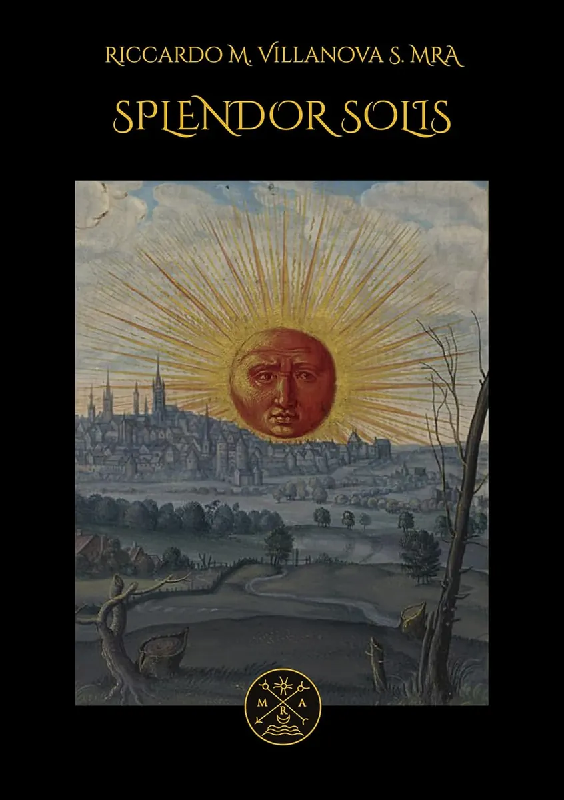
Nuovo libroSPLENDOR SOLIS - TRATTATO ALCHEMICO CON COMMENTARIO DEL MAESTRO MRA
Il volume “SPLENDOR SOLIS - TRATTATO ALCHEMICO CON COMMENTARIO DEL MAESTRO MRA” entra ora nella selezione dei libri con la sua copertina ufficiale.
 Nuovo libro
Nuovo libroTHE XXII AMMONIAN KEYS
Il volume “THE XXII AMMONIAN KEYS” entra ora nella selezione dei libri con la sua copertina ufficiale.
{kind=link}
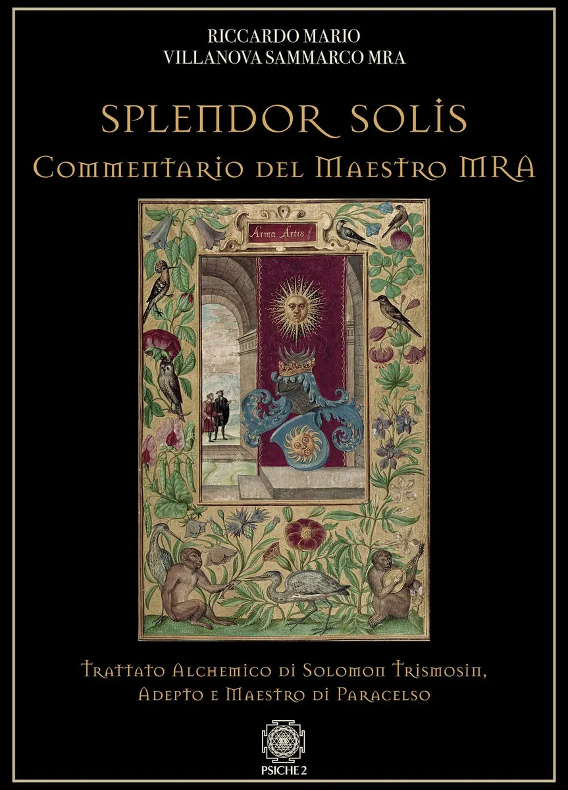
Nuovo libroSPLENDOR SOLIS - COMMENTARIO DEL MAESTRO MRA - TRATTATO ALCHEMICO DI SOLOMON TRISMOSIN, ADEPTO E MAESTRO DI PARACELSO
Il volume “SPLENDOR SOLIS - COMMENTARIO DEL MAESTRO MRA - TRATTATO ALCHEMICO DI SOLOMON TRISMOSIN, ADEPTO E MAESTRO DI PARACELSO” entra ora nella selezione dei libri con la sua copertina ufficiale.
{kind=link}
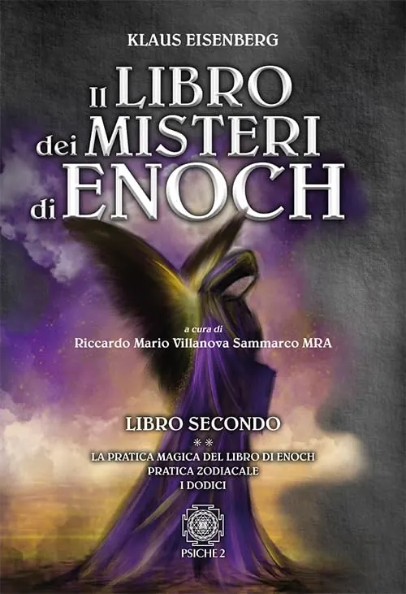
Nuovo libroIL LIBRO DEI MISTERI DI ENOCH - LA PRATICA MAGICA DEL LIBRO DI ENOCH - PRATICA ZODIACALE - I DODICI (Vol. 2)
Il volume “IL LIBRO DEI MISTERI DI ENOCH - LA PRATICA MAGICA DEL LIBRO DI ENOCH - PRATICA ZODIACALE - I DODICI (Vol. 2)” entra ora nella selezione dei libri con la sua copertina ufficiale.
{kind=link}
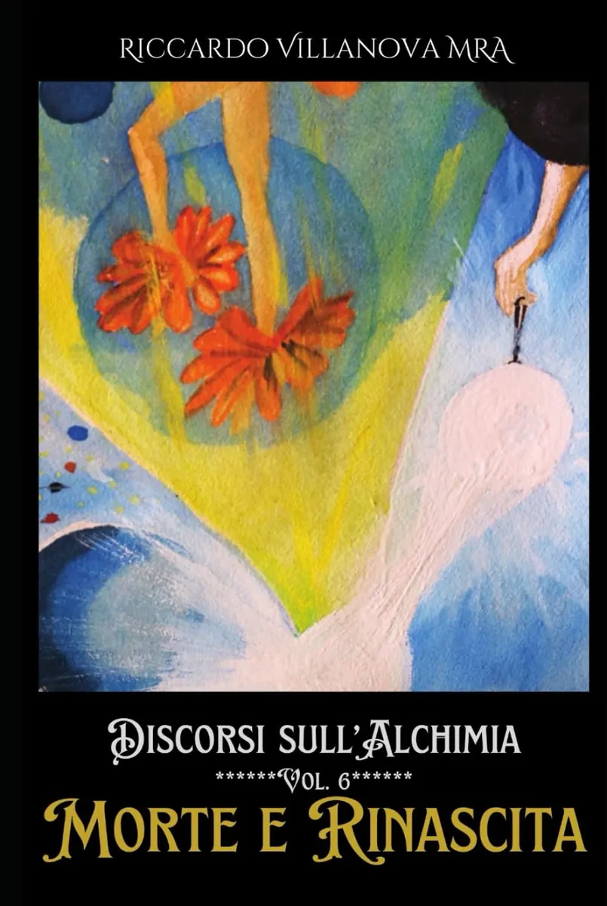
Nuovo libroDISCORSI SULL'ALCHIMIA - VOL VI: MORTE E RINASCITA, IL NATALE E L’EPIFANIA
Il volume “DISCORSI SULL'ALCHIMIA - VOL VI: MORTE E RINASCITA, IL NATALE E L’EPIFANIA” entra ora nella selezione dei libri con la sua copertina ufficiale.
{kind=link}
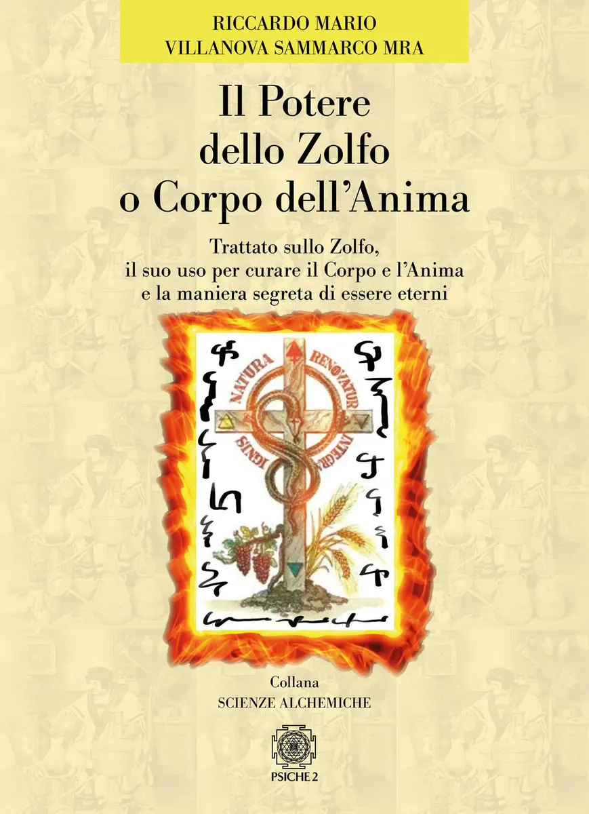
Nuovo libroIL POTERE DELLO ZOLFO O CORPO DELL'ANIMA - TRATTATO SULLO ZOLFO, IL SUO USO PER CURARE IL CORPO E L'ANIMA E LA MANIERA SEGRETA DI ESSERE ETERNI
Il volume “IL POTERE DELLO ZOLFO O CORPO DELL'ANIMA - TRATTATO SULLO ZOLFO, IL SUO USO PER CURARE IL CORPO E L'ANIMA E LA MANIERA SEGRETA DI ESSERE ETERNI” entra ora nella selezione dei libri con la sua copertina ufficiale.
{kind=link}
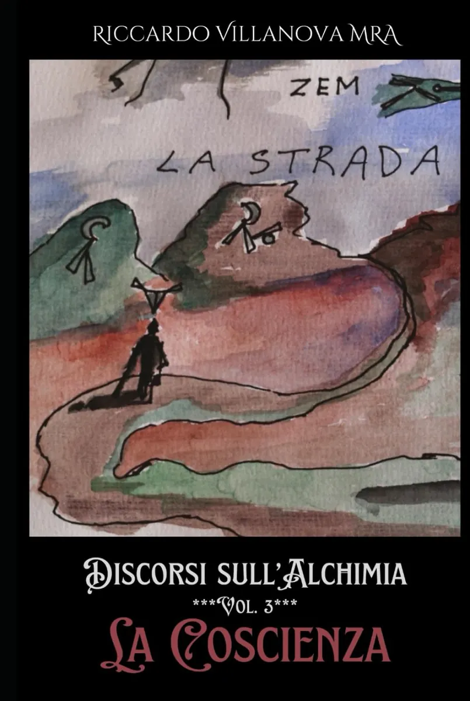
Nuovo libroDISCORSI SULL'ALCHIMIA - VOL. III: LA COSCIENZA
Il volume “DISCORSI SULL'ALCHIMIA - VOL. III: LA COSCIENZA” entra ora nella selezione dei libri con la sua copertina ufficiale.
{kind=link}
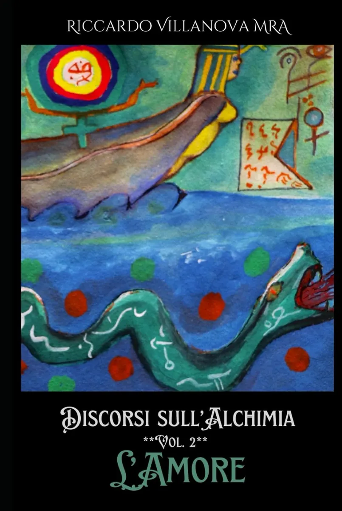
Nuovo libroDISCORSI SULL'ALCHIMIA - VOL. II: L'AMORE
Il volume “DISCORSI SULL'ALCHIMIA - VOL. II: L'AMORE” entra ora nella selezione dei libri con la sua copertina ufficiale.
{kind=link}
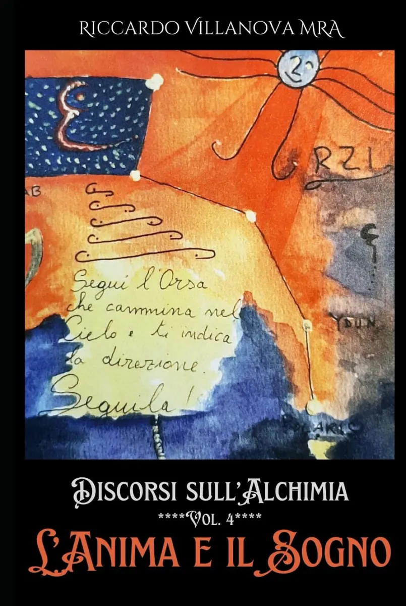
Nuovo libroDISCORSI SULL’ALCHIMIA - VOL IV: L'ANIMA E IL SOGNO
Il volume “DISCORSI SULL’ALCHIMIA - VOL IV: L'ANIMA E IL SOGNO” entra ora nella selezione dei libri con la sua copertina ufficiale.
{kind=link}
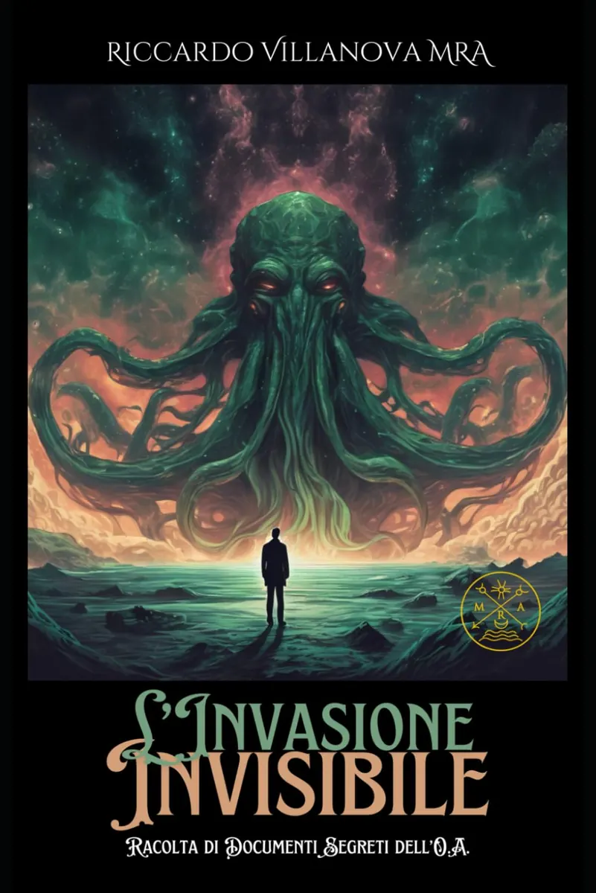
Nuovo libroL'INVASIONE INVISIBILE
Il volume “L'INVASIONE INVISIBILE” entra ora nella selezione dei libri con la sua copertina ufficiale.
{kind=link}
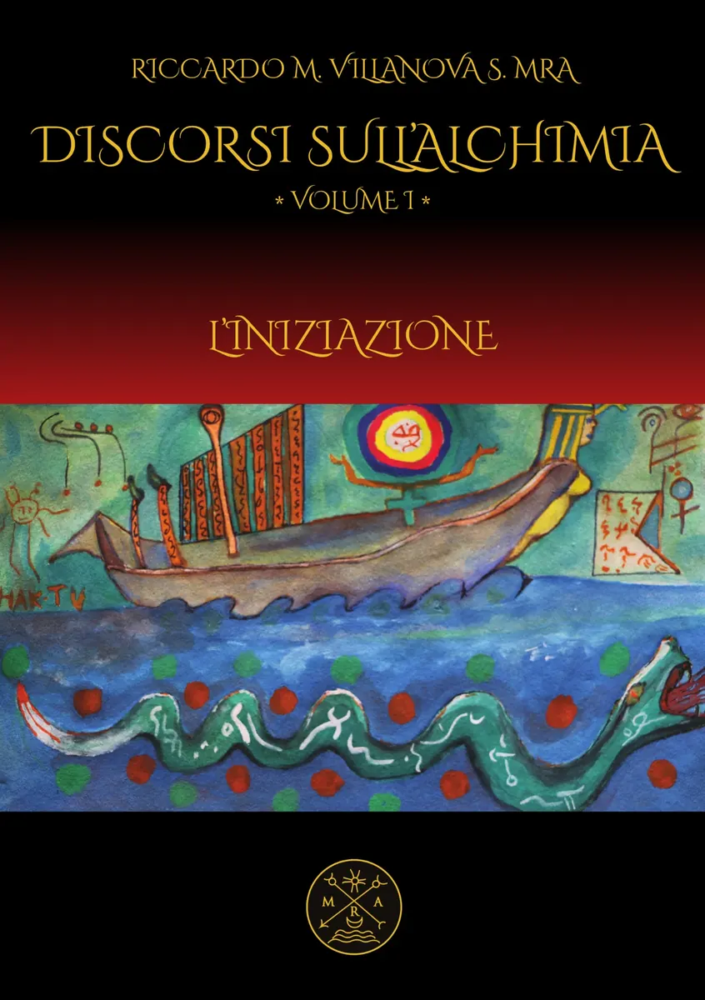
Nuovo libroDISCORSI SULL’ALCHIMIA, VOL I: L’INIZIAZIONE
Il volume “DISCORSI SULL’ALCHIMIA, VOL I: L’INIZIAZIONE” entra ora nella selezione dei libri con la sua copertina ufficiale.
{kind=link}
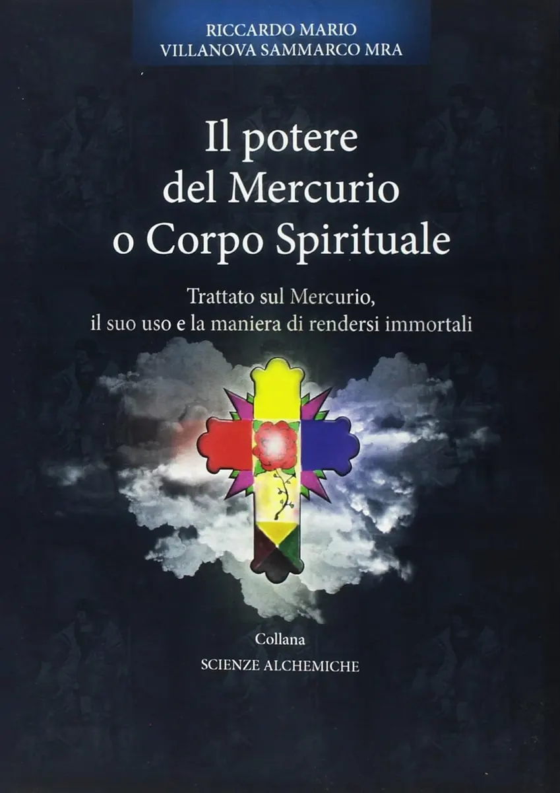
Nuovo libroIL POTERE DEL MERCURIO O CORPO SPIRITUALE - TRATTATO SUL MERCURIO, IL SUO USO E LA MANIERA DI RENDERSI IMMORTALI
Il volume “IL POTERE DEL MERCURIO O CORPO SPIRITUALE - TRATTATO SUL MERCURIO, IL SUO USO E LA MANIERA DI RENDERSI IMMORTALI” entra ora nella selezione dei libri con la sua copertina ufficiale.
{kind=link}
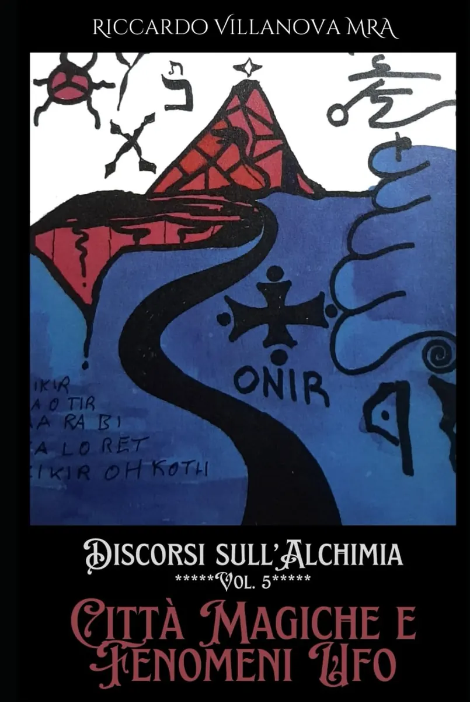
Nuovo libroDISCORSI SULL’ALCHIMIA - VOL. V: CITTÀ MAGICHE E FENOMENI UFO
Il volume “DISCORSI SULL’ALCHIMIA - VOL. V: CITTÀ MAGICHE E FENOMENI UFO” entra ora nella selezione dei libri con la sua copertina ufficiale.
{kind=link}
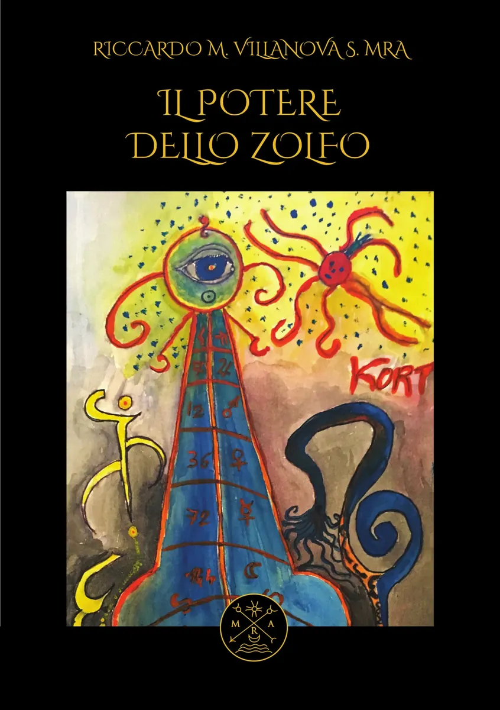
Nuovo libroIL POTERE DELLO ZOLFO O CORPO DELL’ANIMA: TRATTATO SULLO ZOLFO - IL SUO USO PER CURARE IL CORPO E L’ANIMA
Il volume “IL POTERE DELLO ZOLFO O CORPO DELL’ANIMA: TRATTATO SULLO ZOLFO - IL SUO USO PER CURARE IL CORPO E L’ANIMA” entra ora nella selezione dei libri con la sua copertina ufficiale.
{kind=link}
MAGICHE FORMULE SEGRETE CONTRO LE AVVERSITÀ QUOTIDIANE
Il volume “MAGICHE FORMULE SEGRETE CONTRO LE AVVERSITÀ QUOTIDIANE” entra ora nella selezione dei libri con la sua copertina ufficiale.
{kind=link}
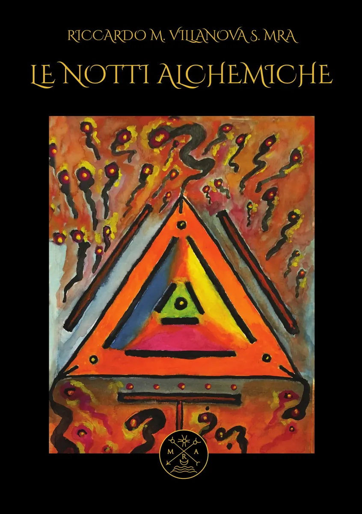
Nuovo libroLE NOTTI ALCHEMICHE - TRATTATO PRATICO DI ALCHIMIA E MAGIA TRASMUTATORIA
Il volume “LE NOTTI ALCHEMICHE - TRATTATO PRATICO DI ALCHIMIA E MAGIA TRASMUTATORIA” entra ora nella selezione dei libri con la sua copertina ufficiale.
{kind=link}
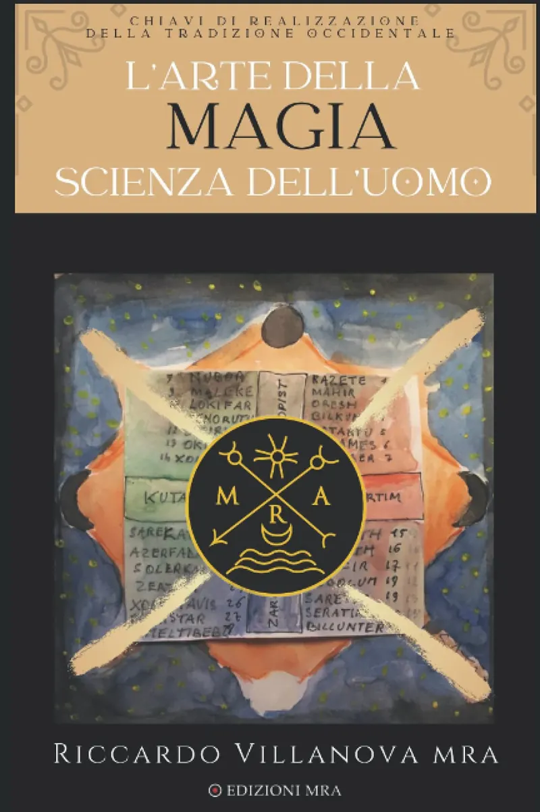
Nuovo libroL’ARTE DELLA MAGIA: LA SCIENZA DELL'UOMO - CHIAVI DI REALIZZAZIONE DELLA TRADIZIONE OCCIDENTALE
Il volume “L’ARTE DELLA MAGIA: LA SCIENZA DELL'UOMO - CHIAVI DI REALIZZAZIONE DELLA TRADIZIONE OCCIDENTALE” entra ora nella selezione dei libri con la sua copertina ufficiale.
{kind=link}
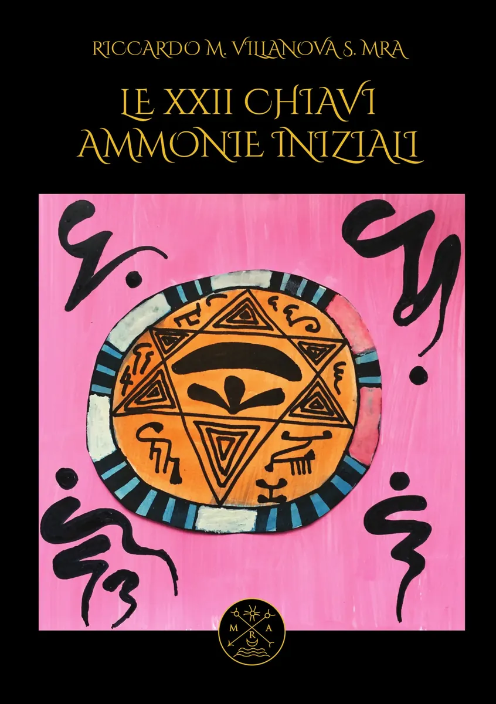
Nuovo libroLE XXII CHIAVI AMMONIE INIZIALI
Il volume “LE XXII CHIAVI AMMONIE INIZIALI” viene ora presentato nella pagina dei libri con la sua copertina. Per informazioni e disponibilità è possibile contattare Academy MRA.
 Nuovo libro
Nuovo libroIL POTERE DEL MERCURIO: IL CORPO SPIRITUALE
Il volume “IL POTERE DEL MERCURIO: IL CORPO SPIRITUALE” entra ora nella selezione dei libri con la sua copertina ufficiale. Il testo è dedicato al potere del Mercurio e al corpo spirituale.
{kind=link}
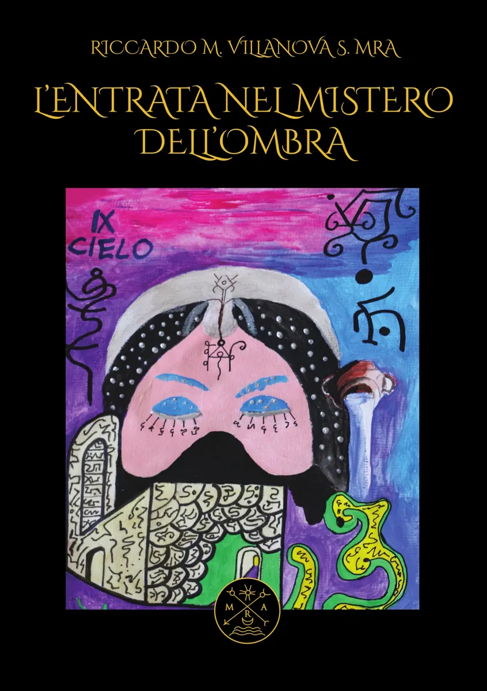
Nuovo libroL'ENTRATA NEL MISTERO DELL'OMBRA: MAGIA ASSIRO BABILONESE
Il volume “L'ENTRATA NEL MISTERO DELL'OMBRA: MAGIA ASSIRO BABILONESE” entra ora nella selezione dei libri con la sua copertina ufficiale.
 Nuovo libro
Nuovo libroLA TEURGIA DI ENOCH, Vol. 1 - PRATICA PLANETARIA: I SETTE
Il volume “LA TEURGIA DI ENOCH, Vol. 1 - PRATICA PLANETARIA: I SETTE” presenta la prima pratica planetaria della Teurgia di Enoch, dedicata ai sette principi e al loro funzionamento operativo.
Pubblicazioni e volumi speciali
{kind=link}
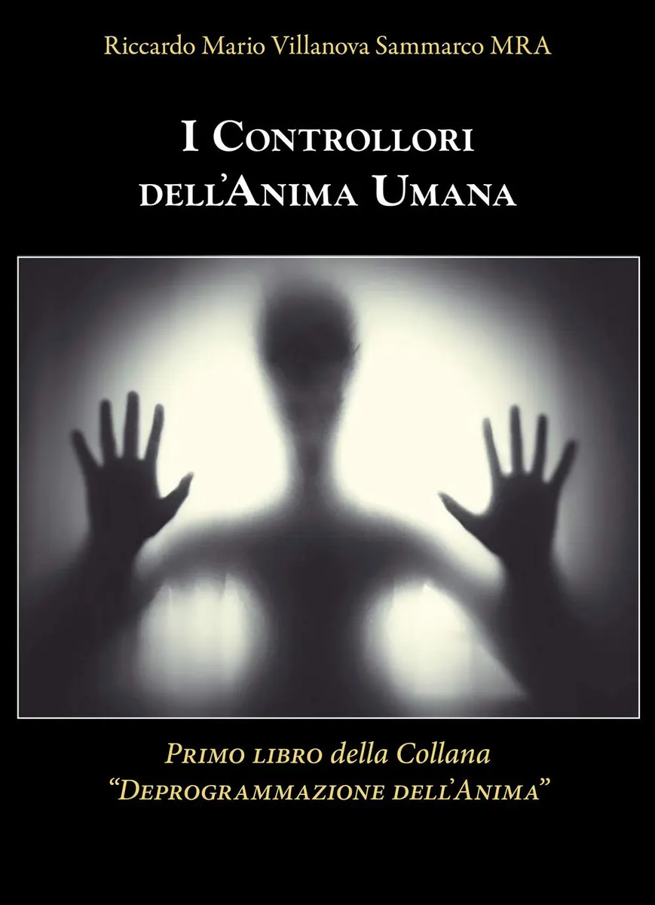
Nuovo libroI CONTROLLORI DELL’ANIMA UMANA
Il volume “I CONTROLLORI DELL’ANIMA UMANA” entra ora nella selezione dei libri con la sua copertina ufficiale.